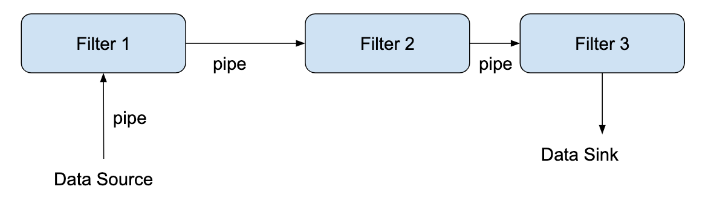
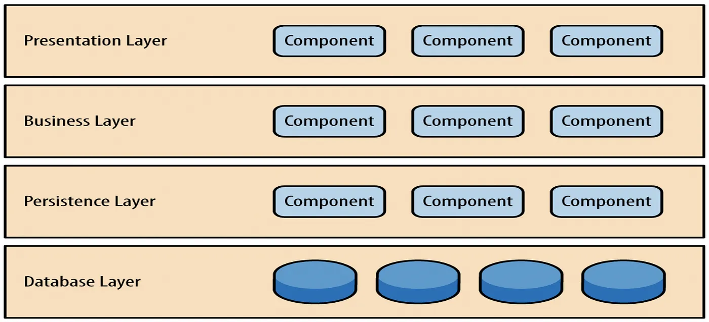
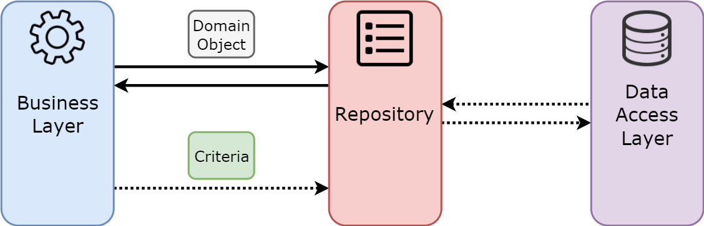
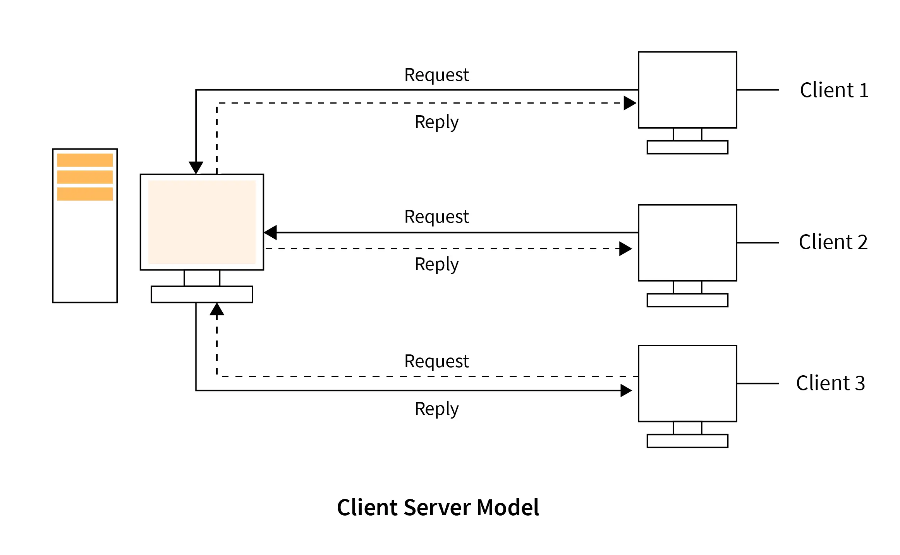
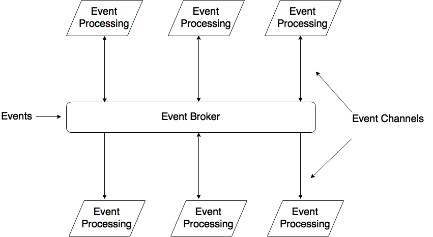
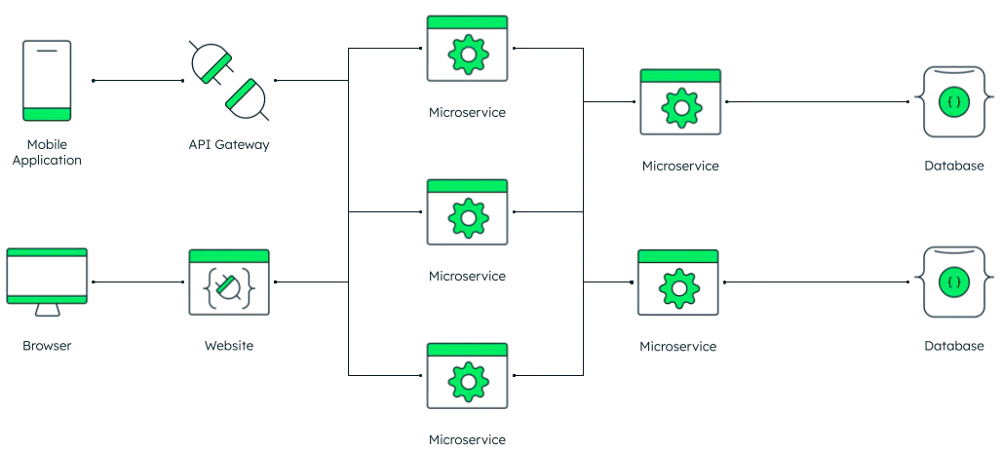

Thursday, February 29, 2024
Front Matter
- Quiz 2 is in process of being graded. Results should be available by Monday.
Today’s Agenda
- Software Architecture
- Elements of Good Architecture
- Architectural Models
- Architectural Patterns
Software Architecture
What is Software Architecture?
- Software architecture involves defining the system’s structure, encompassing its components and their interactions.
- It serves as a crucial bridge between system design and requirements engineering, pinpointing the primary structural elements and their interconnections.
- An architectural model illustrates the organization of the system through a network of interacting components.
Architecture -vs- Design
There is a thin line between an architecture pattern and a design pattern, and most people get confused between the two.
Architecture: Focuses on the high-level structure of the whole system.
- Identifies the necessary components.
- Defines connections and protocols between components.
Architecture -vs- Design (cont.)
Design: Concentrates on the detailed creation of each component.
- Details data representation within a component.
- Outlines interfaces and class hierarchies.
Historical Perspective
Early development methodologies favored a fixed (or static) architecture.
- Emphasized upfront planning and design.
- Changes to architecture seen as costly and risky.
- Aimed to minimize alterations post-design to avoid budget and timeline overruns.
Designing for Change
Agile methodologies introduced a paradigm shift towards adaptability through flexible architectures. Modern approaches focus on:
- Creating architectures that can evolve, through flexibility and modularity from the start.
- Aim to minimize the need for large-scale changes.
- Encourages regular reassessment and refinement of architecture.
Good Architecture
Key Properties of Good Architecture
- Meets Requirements: Ensures functionality and performance align with expectations.
- Manages Complexity: Simplifies system complexity for easier maintenance and development.
- Adapts to Change: Designed with flexibility to accommodate future modifications.
- Prioritizes Quality Attributes: Appropriately focuses on reliability, safety, understandability, compatibility, and robustness.
The Role of Good Architecture
A well-designed architecture facilitates:
- System Understanding: Clarifies module interactions.
- Reuse: Identifies opportunities for reusing components.
- Construction: Organizes development into manageable work items, linking requirements to implementation.
- Evolution: Illustrates paths for future system growth.
- Management: Assists in tracking progress and understanding project scope.
- Communication: Enhances team communication through a shared vocabulary and visual representations.
Good Architecture Emphasizes Modularity
Modularity defines how easily system components can be separated and recombined, offering:
- Flexibility: Supports varied use through adaptable components.
- Abstraction: Key to achieving modularity, emphasizing the importance of selecting the right abstractions.
Attaining Modularity
To attain modularity, aim for:
- Strong Cohesion: Ensures a component’s internal operations are closely related.
- Loose Coupling: Minimizes dependencies between components for greater independence.
Cohesion
Cohesion measures the relatedness of operations within a module:
- Ideal Cohesion: Operations within a module are strongly related, enhancing clarity and effectiveness.
- Avoiding Overload: Shun the creation of “god” classes with disparate responsibilities, which dilute cohesion.
Coupling
Coupling reflects the interdependence between modules:
- Optimal Coupling: Strive for loose (or minimal) coupling to enhance module independence.
- Coupling Consequences: High interdependence complicates separate module modifications and maintenance.
Achieving Modularity
Involves:
- Information Hiding: Separating the public interface from private implementation details.
- Interfaces: Define the accessible data and behaviors of a component, fostering clear boundaries between components.
- Client Interaction: Emphasizes the relationship between the client code and the module’s public interface, ensuring encapsulation and separation of concerns.
Architectural Models
Modeling Software Architecture
- Architectural models offer distinct perspectives of the system.
- Typical views include module decomposition, runtime interactions, and component distribution.
- Design and documentation necessitate multiple views for completeness.
Model Representation
Simple, informal block diagrams are commonly employed.
- Advantages: Enhance communication and assist in project planning.
- Limitations: May not fully capture detailed architectural nuances.
The 4+1 View Model
The 4+1 view model articulates the architecture using multiple concurrent perspectives:
- Logical View: Outlines the system’s object or class structure.
- Process View: Depicts runtime process interactions.
- Development View: Shows the software’s organizational structure for development.
- Physical View: Illustrates the distribution of software across hardware.
- Scenarios (+1): Connects all views with use cases or scenarios.
Models + Documentation
- System Design Discussions: Architectural models serve as a basis for stakeholder dialogues, facilitating consensus and collaborative decision-making.
- Architecture to Implementation: Detailed documentation outlines the system’s architecture for effective implementation, from module interaction to physical deployment.
Modeling Benefits
- Facilitates Stakeholder Communication: Central to discussions, ensuring shared understanding and consensus.
- Enables System Analysis: Critical for assessing compliance with non-functional requirements like reliability and scalability.
- Promotes Reuse: Architectural documentation supports the application of patterns across various systems, enhancing efficiency.
Architectural Patterns
Architectural Patterns
- Definition: Stylized descriptions of proven design practices.
- Purpose: Facilitate representation, sharing, and reuse of architectural knowledge.
- Utility: Provide guidance on their applicability, including contexts where they are beneficial or not.
- Representation: Utilize both tabular and graphical methods for clear and effective communication of patterns.
Key Architectural Patterns
- Layered Architecture: Organizes the system into layers, each with a specific responsibility.
- Client-Server: Divides the system into clients and servers, with clients making requests and servers providing responses.
- Master-Slave: Assigns control over a set of resources to a single master, with slaves executing tasks on behalf of the master.
- Pipe-Filter: Divides the system into a series of components, each processing data and passing it to the next component.
- Model-View-Controller (MVC): Separates the system into three interconnected components: the model, the view, and the controller.
- Blackboard: Allows multiple agents to work together to solve a problem, with each agent contributing its knowledge to a shared repository.
- Event-Driven Architecture: Uses events to trigger and communicate between components, allowing for asynchronous processing and decoupling of components.
- Microservices: Decomposes the system into a set of small, independent services, each with its own data store and communication mechanism.
Pipes and Filters Architecture
Pipes and Filters Pattern
- Unidirectional Data Flow: Streamlined processing from source to sink.
- Pipes: Connectors that pass data between filters.
- Filters: Components that transform data.
Pipe and Filter Benefits
- Intuitive Processing Flow: Data transforms systematically through clear steps.
- Modifiable Filters: Filters are easily changeable provided input and output contracts remain consistent.
- Reusability and Flexibility: Filters can be swapped or extended, enhancing adaptability.
- Separation of Concerns: Natural division of functionality across discrete components.
Pipe and Filter Limitations
- Data Transmission Overhead: Passing the entire data set through all components can be inefficient.
- Reliability Concerns: Potential for data loss in transit between filters.
- Performance Bottlenecks: System speed can be hampered by numerous or slow-processing filters, leading to potential bottlenecks.
Layered Architecture
Layered Architecture
Layered architecture patterns are n-tiered patterns where the components are organized in horizontal layers. This is the traditional method for designing most software and is meant to be self-contained. This means that all the components are interconnected but do not depend on each other.
- Hierarchical Organization: System functionality divided into distinct layers.
- Layer Responsibilities: Each layer has specific responsibilities (separation of concerns) and serves the layer above.
- Inter-layer Communication: Layers interact with adjacent layers only.
Typical Four-Layer Architecture
- Presentation Layer: User interface and user interaction management.
- Business Logic Layer: Core processing and business rule implementation.
- Persistence Layer: Data management and storage handling.
- Database Layer: Data storage and retrieval mechanisms.
Layered Architecture Benefits
- Enhanced Organization: Clear separation of functional areas.
- Increased Flexibility: Layers can be modified or replaced independently.
- Improved Scalability: Easier to scale layers independently to meet demand.
- Simplified Testing and Maintenance: Layers can be tested in isolation.
Layered Architecture Limitations
- Performance Overhead: Additional processing associated with layer traversal.
- Rigidity in Layer Interaction: Strict layering can limit interaction to adjacent layers only.
- Potential for Redundancy: Similar functions may be reimplemented in multiple layers.
Model-View-Controller
Model-View-Controller (MVC) Architecture
Model-View-Controller (MVC) is a pattern in software design commonly used to implement user interfaces, data, and controlling logic. It emphasizes the separation between the software’s business logic and display. This “separation of concerns” provides a better division of labor and improved maintenance.
MVC Architecture Components

- Model: The data and business rules of the application.
- View: The output representation of information.
- Controller: The interface between Model and View, processing all the business logic and incoming requests, manipulating data using the Model, and interacting with the Views to render the final output.
MVC Architecture Advantages
- Modularity: Clear division allows for independent development and testing.
- Reusability: Components can be reused across different parts of the application.
- Scalability: Easy to scale the application as complexity grows.
- Maintainable: Changes in the business logic or UI can be made with minimal impact on the other components.
MVC Architecture Limitations
- Learning Curve: Understanding the interactions between components can be challenging for new developers.
- Overhead: Can introduce additional complexity and development overhead.
- Duplication: Risk of duplication if the architecture is not strictly followed.
Repository Architecture
Repository Architecture
The Repository design pattern isolates your domain from caring about how storage is implemented, so all objects retrieved can be treated like an in-memory collection. The repository contains all the logic to get the data and map it to the domain.
Repository Architecture Components
- Client: The consumer of the repository, often a business logic component.
- Repository: Abstraction layer that centralizes data access and manipulation.
- Data Source: The underlying storage mechanism, such as a database or a file system.
Repository Architecture Advantages
- Decoupling: Separates data access from business logic, promoting loose coupling.
- Maintainability: Centralizes data logic, making the application easier to maintain.
- Reusability: Allows the business logic to reuse data access logic.
- Testability: Simplifies testing by using mock repositories or in-memory databases.
Repository Architecture Limitations
- Complexity: Can add complexity to the data access layer.
- Over-abstraction: May lead to unnecessary abstraction layers, making the data access less transparent.
- Performance Overhead: The additional abstraction layer may introduce a performance overhead.
Client-Server Architecture
Client-Server Architecture Overview
- Interaction Model: Defined by the relationship between providers (servers) and requesters (clients) of services.
- Resource Sharing: Servers provide resources or services, while clients consume them.
- Communication: Typically over a network with various protocols.
Client-Server Components
- Client: Initiates requests for services and processes the response.
- Server: Provides services, processes requests, and sends back responses.
- Network: Facilitates communication between clients and servers.
Client-Server Advantages
- Scalability: Servers can be scaled to handle an increasing number of client requests.
- Centralized Control: Servers centralize control over data and services, simplifying management and security.
- Accessibility: Clients can access services remotely, offering flexibility and mobility.
- Resource Optimization: Clients and servers can be optimized separately according to their roles.
Client-Server Limitations
- Network Dependency: Relies heavily on the network for communication, which can introduce latency.
- Resource Intensive: Servers can become overloaded if not properly scaled.
- Security Risks: Centralized servers present a single point of failure and can be targeted for attacks.
Event-Driven Architecture
Event-Driven Architecture Overview
- Reactive Systems: Built around the production, detection, and consumption of events.
- Decoupled Processes: Components react to events rather than directly invoke each other.
- Asynchronous Communication: Allows systems to be more responsive and scalable.
Event-Driven Architecture Components
- Event Producers: Generate events and send them to an event dispatcher or broker.
- Event Consumers: React to events and handle the necessary processing.
- Event Channel: Transports events from producers to consumers.
- Event Broker: (Optional) Routes events to appropriate consumers based on event type or content.
Event-Driven Architecture Advantages
- Flexibility: New event types and event consumers can be added with minimal impact on existing components.
- Scalability: Systems can handle high volumes of events and can be scaled out to meet demand.
- Responsiveness: Asynchronous processing of events leads to responsive systems that can handle varying loads efficiently.
Event-Driven Architecture Limitations
- Complexity in Tracking: Asynchronous nature makes it challenging to track the flow of events and debug issues.
- Event Storming: A large number of events can overwhelm the system, leading to event storming.
- Distributed Transactions: Managing transactions across multiple event consumers can be complex.
Microservices Architecture
Microservices Architecture Overview
- Service-Oriented: Composed of small, autonomous services.
- Decomposition: Each service implements a specific business capability.
- Independence: Services are developed, deployed, and scaled independently.
Microservices Architecture Components
- Client: The user interface or application that consumes the microservices.
- API Gateway: An entry point that routes requests to the appropriate microservices.
- Microservice: A minimal, self-contained unit that serves a single business function.
- Data Store: Independent databases for each service, preventing data entanglement.
Microservices Architecture Advantages
- Agility: Microservices can be developed and deployed rapidly and independently.
- Resilience: Service independence increases the overall system’s fault tolerance.
- Scalability: Services can be scaled horizontally to meet demand.
- Technological Diversity: Services can be implemented using different programming languages and data storage technologies.
Microservices Architecture Limitations
- Complexity: Managing a system composed of many small services can be complex.
- Network Latency: Communication between services over the network introduces latency.
- Data Consistency: Maintaining data consistency across services can be challenging.
- Operational Overhead: Requires robust operational infrastructure for monitoring, logging, and deployment.